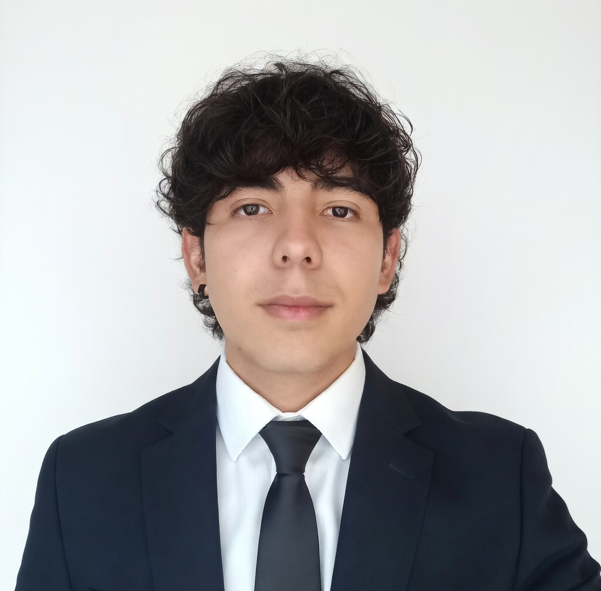
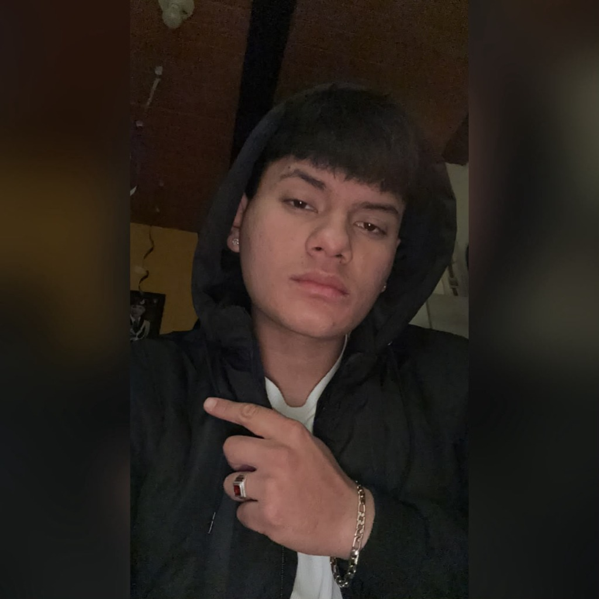

Herramientas creativas
Una suite 2D/3D para apoyar el diseño de carrozas y esculturas: espacio de trabajo, visualización tridimensional y atlas anatómico de referencias.
Diseño + exploraciónPlataforma digital / Nariño
ArtSanctuary es una propuesta para crear, preservar y visibilizar el talento de los maestros artesanos y sus colectivos durante todo el año.
01 - Una nueva memoria digital
El punto de partida
Hoy, los registros de las obras y la memoria del Carnaval viven dispersos en archivos personales y redes sociales. Así, el trabajo de los artesanos pierde visibilidad justo cuando termina la celebración.
La propuesta
Una plataforma pensada para acompañar el proceso creativo, guardar la historia y poner rostro a quienes construyen el Carnaval.
Una suite 2D/3D para apoyar el diseño de carrozas y esculturas: espacio de trabajo, visualización tridimensional y atlas anatómico de referencias.
Diseño + exploraciónUn repositorio digital de fotografías, documentos y registros del Carnaval, clasificados por año, modalidad, técnica y autor.
Patrimonio + memoriaEspacios para conocer la trayectoria, las obras y los reconocimientos de los maestros y sus colectivos.
Personas + legadoPersonas que crean
Una muestra de los perfiles que ArtSanctuary puede reunir para visibilizar trayectorias, intereses y formas distintas de crear.

Estudiante de Ingeniería de Software, me gusta la arquitectura de software y el diseño de interfaces de usuario.
Ver perfil
Estudiante de Ingeniería de Software, interesado en el desarrollo de software con potencial y impacto hacia las plataformas futuras.
Ver perfil
Desarrollador Full Stack con enfoque en diseño 3D, modelado con Blender y desarrollo interactivo con Three.js.
Ver perfilArtSanctuary conecta la imaginación del presente con la memoria que merece ser compartida mañana.